NCERT Solutions for Class 11 Physics Chapter 3 Motion in a Straight Line are part of Class 11 Physics NCERT Solutions. Here we have given NCERT Solutions for Class 11 Physics Chapter 3 Motion in a Straight Line.
NCERT Solutions for Class 11 Physics Chapter 3 Motion in a Straight Line
Topics and Subtopics in NCERT Solutions for Class 11 Physics Chapter 3 Motion in a Straight Line:
| Section Name | Topic Name |
| 3 | Motion in a Straight Line |
| 3.1 | Introduction |
| 3.2 | Position, path length and displacement |
| 3.3 | Average velocity and average speed |
| 3.4 | Instantaneous velocity and speed |
| 3.5 | Acceleration |
| 3.6 | Kinematic equations for uniformly accelerated motion |
| 3.7 | Relative velocity |
NCERT Solutions Class 11 PhysicsPhysics Sample Papers
QUESTIONS FROM TEXTBOOK
Question 3. 1. In which of the following examples of motion, can the body be considered approximately a point object.
(a) A railway carriage moving without jerks between two stations.
(b) A monkey sitting on top of a man cycling smoothly on a circular track.
(c) A spinning cricket ball that turns sharply on hitting the ground.
(d) A tumbling beaker that has slipped off the edge of table.
Answer: (a) The railway carriage moving without jerks between two stations, so the distance
between two stations is considered to be large as compared to the size of the train. Therefore the train is considered as a point object.
(b) The monkey may be considered as point object because value of distance covered on
a circular track is much greater.
(c) As turning of ball is not smooth, thus the distance covered by ball is not large in the reasonable time. Therefore ball cannot be considered as point object.
(d) Again a tumbling beaker slipped off the edge of a table cannot be considered as a point object because distance covered is not much larger.
Question 3. 2. The position-time (x -1) graphs for two children A and B returning from their school O to their homes P and Q respectively are shown in Fig. Choose the correct entries in the brackets below:
(a) (A/B) lives closer to the school than (B/A).
(b) (A/B) starts from the school earlier than (B/A).
(c) (A/B) walks faster than (B/A).
(d) A and B reach home at the (same/different) time.
(e) (A/B) overtakes (B/A) on the road (once/twice).
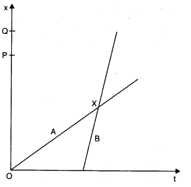
Answer: (a) A lives closer to school than B, because B has to cover higher distances [OP < OQ],
(b) A starts earlier for school than B, because t = 0 for A but for B, t has some finite time.
(c) As slope of B is greater than that of A, thus B walks faster than A.
(d) A and B reach home at the same time.
(e) At the point of intersection (i.e., X), B overtakes A on the roads once.
More Resources for CBSE Class 11
- NCERT Solutions
- NCERT Solutions Class 11 Maths
- NCERT Solutions Class 11 Physics
- NCERT Solutions Class 11 Chemistry
- NCERT Solutions Class 11 Biology
- NCERT Solutions Class 11 Hindi
- NCERT Solutions Class 11 English
- NCERT Solutions Class 11 Business Studies
- NCERT Solutions Class 11 Accountancy
- NCERT Solutions Class 11 Psychology
- NCERT Solutions Class 11 Entrepreneurship
- NCERT Solutions Class 11 Indian Economic Development
- NCERT Solutions Class 11 Computer Science
Question 3. 3. A woman starts from her home at 9.00 am, walks with a speed of 5 km h-1 on a straight road up to her office 2.5 km away, stays at the office up to 5.00 pm, and returns home by an auto with a speed of 2.5 km h-1. Choose suitable scales and plot the x-t graph of her motion.
Answer: Distance covered while walking = 2.5 km.
Speed while walking = 5 km/h
Time taken to reach office while walking = (2.5/5 ) h=1/2 h
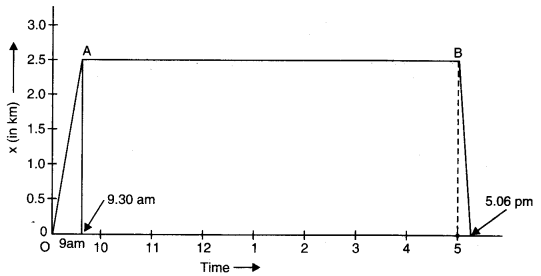
If O is regarded as the origin for both time and distance, then at t = 9.00 am, x = 0
and at t = 9.30 am, x = 2.5 km
OA is the x-t graph of the motion when the woman walks from her home to office. Her stay in the office from 9.30 am to 5.00 pm is represented, by the straight line AB in the graph.
Now, time taken to return home by an auto = 2.5/5 h =1/10 h =6 minute
So, at t = 5.06 pm, x = 0
This motion is represented by the straight line BC in the graph. While drawing the x-t graph, the scales chosen are as under:
Along time-axis, one division equals 1 hour.
Along positive-axis, one division equals 0.5 km.
Question 3. 4. A drunkard walking in a narrow lane takes 5 steps forward and 3 steps backward, followed again by 5 steps forward and 3 steps backward, and so on. Each step is 1 m long and requires 1 s. Plot the x-t graph of his motion. Determine graphically and otherwise how long the drunkard takes to fall in a pit 13 m away from the start.
Answer: Since the man steadily moves forward as the time progresses so the following graph will represent his motion till he covers 13 m. In 5 s he moves through a distance of 5 m and then in next 3 s comes back by 3 m.
Thus in 8 s he covers only 2 m, as shown in the graph he would fall in the pit in 37 s.
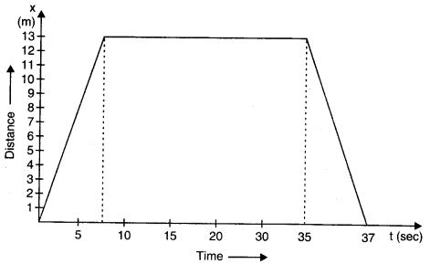
As pointed out earlier, the man covers 2 m in 8 s so, he will cover 8 m in 32 s. But at the end in 5 s he would cover another 5 m i.e., 32 s + 5 s = 37 s, he would cover 8 m + 5 m = 13 m. Thus, he would fall in the pit in 37th second.
Question 3. 5. A jet airplane travelling at the speed of 500 km h-1 ejects its products of combustion at the speed of 1500 km h-1 relative to the jet plane. What is the speed of the latter with respect to an observer on the ground?
Answer: Velocity of jet airplane w.r.t observer on ground = 500 km/h.
If Vj and v0 represent the velocities of jet and observer respectively, then vj – vo = 500 km h-1
Similarly, if vc represents the velocity of the combustion products w.r.t jet plane, then vc – vg = -1500 km/h
The negative sign indicates that the combustion products move in a direction opposite to that of jet.
Speed of combustion products w.r.t. observer
= vc – u0 = (vc – vj) + (vj – v0) = (-1500 + 500) km h-1 = -1000 km h-1.
Question 3. 6. A car moving along a straight highway with speed of 126 km h-1 is brought to a stop within a distance of 200 m. What is the retardation of the car (assumed uniform), and how long does it take for the car to stop?
Answer:
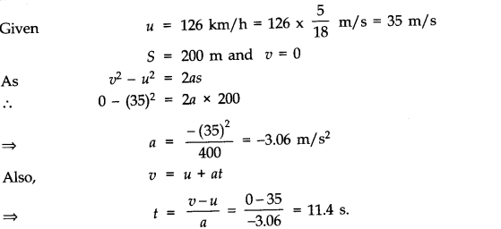
Question 3. 7. Two trains A and B of length 400 m each are moving on two parallel tracks with a uniform speed of 71 km h-1 in the same direction, with A ahead of B. The driver of B decides to overtake A and accelerates by 1 ms-1. If after 50 s, the guard of B just brushes past the driver of A, what was the original distance between them?
Answer: Here length of train A = length of train B = l = 400 m. As speed of both trains u = 72 km h-1 = 20 ms-1 in same direction, hence their relative velocity uBA = 0.
Let initial distance between the two trains be ‘S’ then train B covers the distance (S + 11) = (S + 800) m in time t = 50 s when accelerated with a uniform acceleration a = 1 m/s2.
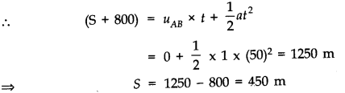
and initial distance between guard of train B from driver of train A = 450 + 800 = 1250 m.
Question 3. 8. On a two-lane road, car A is travelling with a speed of 36 km h-1. Two cars B and C approach car A in opposite directions with a speed of 54 km h-1 each. At a certain instant, when the distance AB is equal to AC, both being 1 km, B decides to overtake A before C does. What minimum acceleration of car B is required to avoid an accident?
Answer:
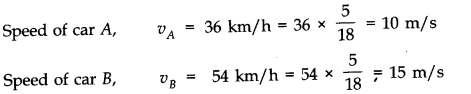
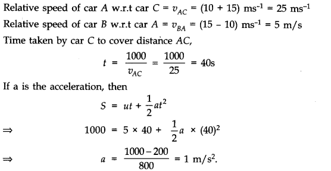
Question 3. 9. Two towns A and B are connected by regular bus service with a bus leaving in either direction every T minute. A man cycling with a speed of 20 km h-1 in the direction A to B notices that a bus goes past him every 18 min in the direction of his motion, and every 6 min in the opposite direction. What is the period T of the bus service and with what speed (assumed constant) do the buses ply on the road?
Answer: Let vb be the speed of each bus. Let vc be the speed of cyclist.
Relative velocity of the buses plying in the direction of motion of cyclist is vb – vc .
The buses playing in the direction of motion of the cyclist go past him after every
18 minute i.e.18/20 h.
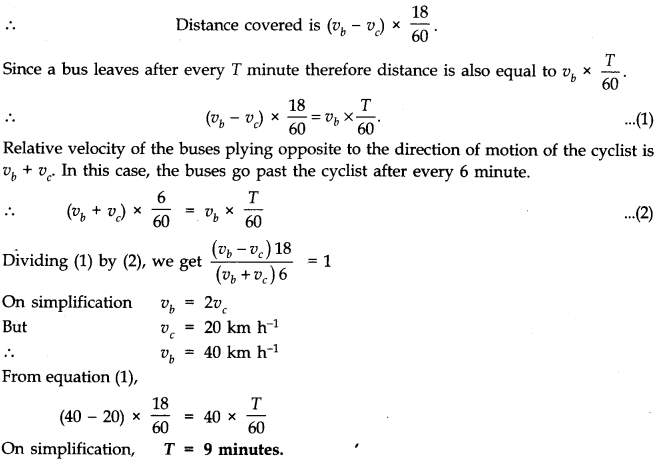
Question 3. 10. A player throws a ball upwards with an initial speed of 29.4 ms-1.
(a) What is the direction of acceleration during the upward motion of the ball?
(b) What are the velocity and acceleration of the ball at the highest point of its motion?
(c) Choose the x = 0 m and t = 0 s to be the location and time of the ball at its highest point, vertically downward direction to be the positive direction of x-axis, and give the signs of position, velocity and acceleration of the ball during its upward, and downward motion.
(d) To what height does the ball rise and after how long does the ball return to the player’s hands? (Take g = 9.8 m s-2 and neglect air resistance).
Answer: (a) The direction of acceleration during the upward motion of the ball is vertically downward.
(b) At the highest point, velocity of ball is zero but acceleration (g = 9.8 ms-2) in vertically downward direction.
(c) If we consider highest point of ball motion as x = 0, t = 0 and vertically downward direction to be +ve direction of x-axis, then
(i) during upward motion of ball before reaching the highest point position (as well as displacement) x = +ve, velocity v = -ve and acceleration a = g = +ve.
(ii) during the downward motion of ball after reaching the highest point, x, v and a = g all the three quantities are positive.
(d) During upward motion
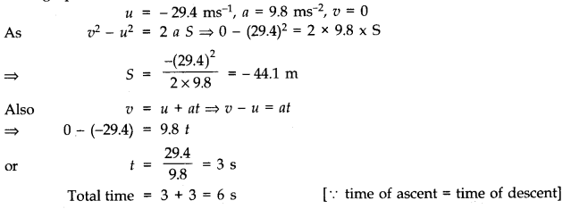
Question 3. 11. Read each statement below carefully and state with reasons and examples, if it is true or false; A particle in one-dimensional motion
(a) with zero speed at an instant may have non-zero acceleration at that instant.
(b) with, zero speed may have non-zero velocity.
(c) with constant speed must have zero acceleration,
(d) with positive value of acceleration must be speeding up.
Answer: (a) True. Consider a ball thrown up. At the highest point, speed is zero but the acceleration is non-zero.
(b) False. If a particle has non-zero velocity, it must have speed.
(c) True. If the particle rebounds instantly with the same speed, it implies infinite acceleration which is physically impossible.
(d) False. True only when the chosen position direction is along the direction of motion.
Question 3. 12. A ball is dropped from a height of 90 m on a floor. At each collision with the floor, the ball loses one tenth of its speed. Plot the speed-time graph of its motion between t =0 to 12 s.
Answer:
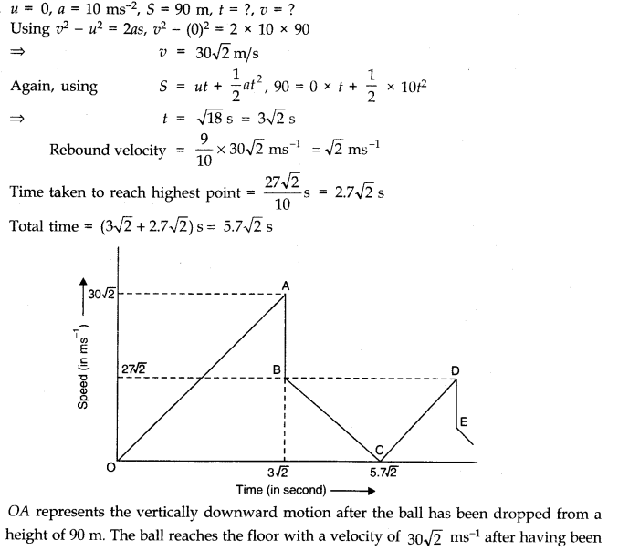
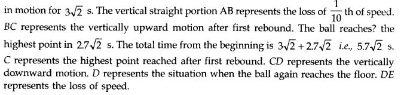
Question 3. 13. Explain clearly, with examples, the distinction between:
(a) Magnitude of displacement (sometimes called distance) over an interval of time, and the total length of path covered by a particle over the same interval;
(b) Magnitude of average velocity over an interval of time, and the average speed over the same interval. (Average speed of a particle over an interval of time is defined as the total path length divided by the time interval). Show in both (a) and (b) that the second quantity is either greater than or equal to the first. When is the equality sign true? [For simplicity, consider one dimensional motion only],
Answer: (a) Suppose a particle goes from point A to B along a straight path and returns to A along the same path. The magnitude of the displacement of the particle is zero, because the particle has returned to its initial position. The total length of path covered by the particle is AB + BA = AB + AB = 2 AB. Thus, the second quantity is greater than the first,
(b) Suppose, in the above example, the particle takes time t to cover the whole journey. Then, the magnitude of the average velocity of the particle over time-interval t is = Magnitude of displacement /Time-interval =0/t =0
While the average speed of the particle over the same time-interval is =Total path length /Time-interval= 2 AB /t
Again, the second quantity (average speed) is greater than the first (magnitude of average velocity).
Note: In both the above cases, the two quantities are equal if the particle moves from one point to another along a straight path in the same direction only.
Question 3.14. A man walks on a straight road from his home to a market 2.5 km away with a speed of 5 km h-1 .Finding the market closed, he instantly turns and walks back home with a speed of 7.5 km h-1 What is the (a)Magnitude of average velocity, and (b)Average speed of the man over the interval of time (i) 0 to 30 min. (ii) 0 to 50 min. (iii) 0 to 40 min? [Note: You will appreciate from this exercise why it is better to define average speed as total path length divided by time, and not as magnitude of average velocity. You would not like to tell the tired man on his return home that his average speed was zero!]
Answer:
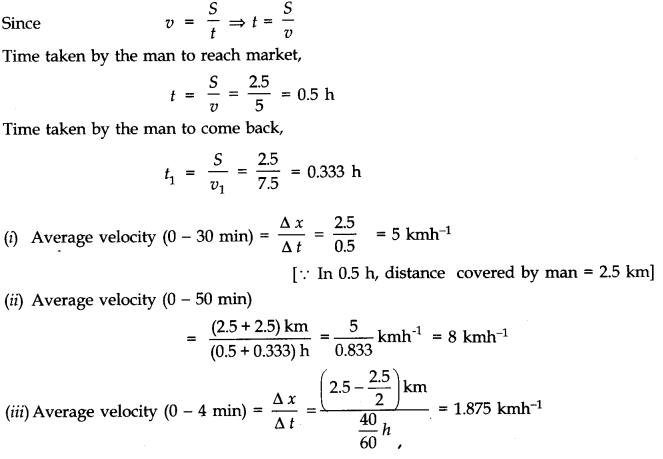
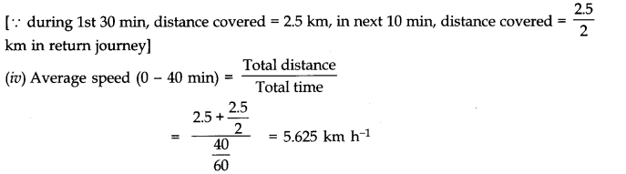
Question 3. 15. In Exercises 3.13 and 3.14, we have carefully distinguished between average speed and magnitude of average velocity. No such distinction is necessary when we consider instantaneous speed and magnitude of velocity. The instantaneous speed is always equal to the magnitude of instantaneous velocity. Why?
Answer: Instantaneous velocity is the velocity of a particle at a particular instant of time. In this case of small interval of time, the magnitude of the displacement is effectively equal to the distance travelled by the particle in the same interval of time. Therefore, there is no distinction between instantaneous velocity and speed.
Question 3. 16. Look at the graphs (a) to (d) Fig. carefully and state, with reasons, which of these cannot possibly represent one-dimensional motion of a particle.
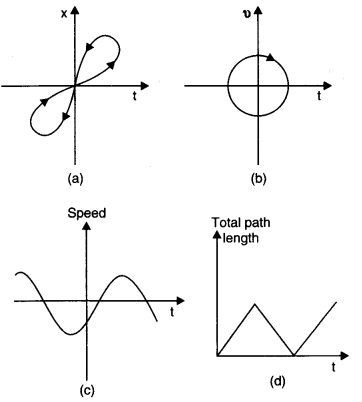
Answer: None of the four graph represent a possible one-dimensional motion. In graphs (a) and (b) motions are definitely two dimensional. Graph (a) represents two positions at the same time which is not possible.
In graph (b) opposite motion is visible at the same time.
The graph (c) is not correct since it shows that the particle has negative speed at a certain instant. Speed is always positive.
In graph (d) path length is shown as increasing as well as decreasing. Path length never decreases.
Question 3. 17. Figure shows the x-t plot of one-dimensional motion of a particle.
Is it correct to say from the graph that the particle moves in a straight line for t < 0 and on a parabolic path for t > 0? If not, suggest a suitable physical context for this graph.
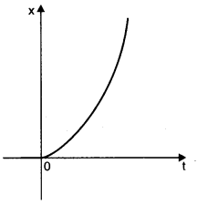
Answer: It is not correct to say that the particle moves in a straight line for t < 0 (i.e., -ve) and on a parabolic path for t > 0 (i.e., + ve)
because the x-t graph can not show the path of the particle.
For the graph, a suitable physical context can be the particle thrown from the top of a tower at the instant t =0.
Question 3. 18. A police van moving on a highway with a speed of 30 km h-1 fires a bullet at a thief s car speeding away in the same direction with a speed of 192 km h-1 . If the muzzle speed of the bullet is 150 ms-1 , with what speed does the bullet hit the thief s car? (Note: Obtain that speed which is relevant for damaging the thief s car).
Answer:
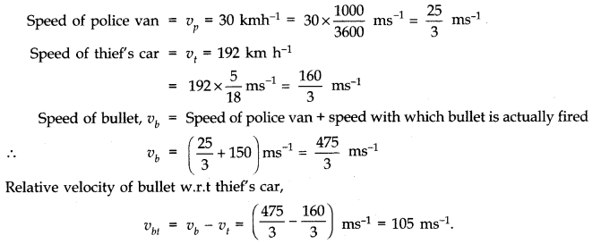
Question 3. 19. Suggest a suitable physical situation for each of the following graphs:
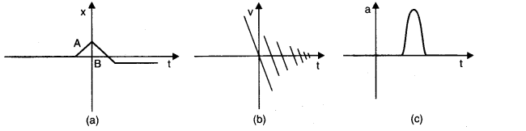
Answer: (a) A ball at rest on a smooth floor is kicked. It rebounds from a wall with reduced speed and moves to the opposite wall which stops it.
(b) The graph shows that velocity changes again and again with the passage of time and every time losing some speed. Therefore, it may represent a physical situation such as a ball falling freely (after thrown up), on striking the ground rebounds with reduced speed after each hit against the ground.
(c) A uniformly moving cricket ball turned back by hitting it with a bat for a very short time-interval.
Question 3. 20. Figure gives the x-t plot of a particle executing one¬dimensional simple harmonic motion. (You will learn about this motion in more detail in Chapter 14). Give the signs of position, velocity and acceleration variables of the particle at t = 0.3 s, 1.2 s, – 1.2 s.
Answer: In x-t graph of Fig. showing simple harmonic motion of a particle, the signs of position, velocity and acceleration are as given below.
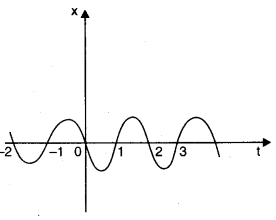
In S.H.M., acceleration, a – x or a = – kx.
(i) At t = 0.3 s, x < 0 i.e., x is in -ve direction. Moreover, as x is becoming more negative with time, it shows that v is also – ve (i.e., v < 0). However, a = -kx will be +ve (a > 0).
(ii) At t = 1.2 s, x > 0, v > 0 and a < 0.
(iii) At t = -1.2 s, x < 0, but here on increasing the time t, value of x becomes less negative.
It means that v is +ve (i.e., v > 0). Again a = – kx will be positive (i.e., a > 0).
Question 3. 21. Figure gives the x-t plot of a particle in one-dimensional motion. Three different equal intervals of time are shown. In which interval is the average speed greatest, and in which is it the least? Give the sign of average velocity for each interval.
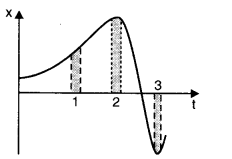
Answer: Greater in 3, least in 2; v > 0 in 1 and 2, v < 0 in interval 3.
Question 3. 22. Figure gives a speed-time graph of a particle in motion along a constant direction. Three equal intervals of time are shown. In which interval is the average acceleration greatest in magnitude? In which interval is the average speed greatest? Choosing the positive direction as the constant direction of motion, give the signs of v and a in the three intervals. What are the accelerations at points A, B, C and D?
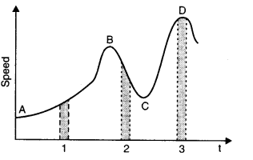
Answer: The acceleration is greatest in magnitude in interval 2 as the change in speed in the same time is maximum in this interval.
The average speed is greatest in interval 3 (peak D is at maximum on speed axis).
The sign of v and a in the three intervals are:
v > 0 in 1, 2 and 3; a > 0 in 1
a < 0 in 2, a=0 in 3.
acceleration is zero at A,B,C and D.
Question 3. 23. A three – wheeler starts from rest , accelerates uniformly with 1 m s-2 on a straight road for 10 s, and then moves with uniform velocity .plot the distance covered by the vehicle during the n th second (n=1,2,3……..) versus n. what do you expect this plot to be during accelerated motion: a straight line or a parabola?
Answer:

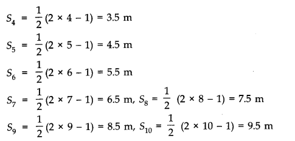
Question 3. 24. A boy standing on a stationary lift (open from above) throws a ball upwards with the maximum initial speed he can, equal to 49 m s-1. How much time does the ball take to return to his hands? If the lift starts moving up with a uniform speed of 5 m s-1 and the boy again throws the ball up with the maximum speed he can, how long does the ball take to return to his hands?
Answer: When either the lift is at rest or the lift is moving either vertically upward or downward with a constant speed, we can apply three simple kinetnatic motion equations presuming a = ± g (as the case may be).In present case u = 49 ms-1 (upward) a = g = 9.8 ms-2 (downward)
If the ball returns to boy’s hands after a time t, then displacement of ball relative to boy
is zero i.e., s = 0. Hence, using equation s = ut + 1/2 at 2, we have
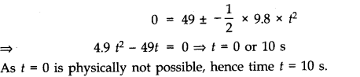
Question 3. 25. On a long horizontally moving belt (Fig.), a child runs to and fro with n speed 9 km h-1 (with respect to the belt) between his father and mother located 50 a part on the moving belt. The belt moves with a speed of 4 km h-1 . For an observe a stationary platform outside, what is the
(a) Speed of the child running in the direction of motion of the belt?
(b) Speed of the child running opposite to the direction of motion of the belt?
(c) Time taken by the child in (a) and (b)?
Which of the answers alter if motion is viewed by one of the parents?
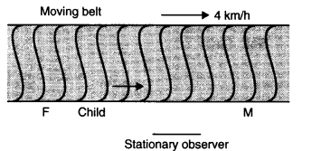
Answer: Speed of child with respect to belt = 9 km h-1 Speed of belt = 4 km h-1
(a) When the child runs in the direction of motion of the belt, then speed of child w.r.t. stationary observer = (9 + 4) km h-1 = 13 km h-1.
(b) When the child runs opposite to the direction of motion of the belt, then speed of child w.r.t. stationary observer = (9 – 4) km h-1 = 5 km h-1
(c) Speed of child w.r.t . either parent=9 km h-1
Distance to be covered = 50 m = 0.05 km 0.05 km
Time=0.05 km/9k h-1=0.0056 h =20 S
If the motion is viewed by one of the parents, then the answers to (a) and (b)are altered but answer to (c) remains unaltered.
Question 3. 26. Two stones are thrown up simultaneously from the edge of a cliff 200 m high with initial speeds of 15 ms-1 and 30 ms-1. Verify that the graph shown in Fig. correctly represents the time variation of the relative position of the second stone with respect to the first. Neglect air resistance and assume that the stones do not rebound after hitting the ground. Take g = 10 ms-2. Give the equations for the linear and curved parts of the plot.
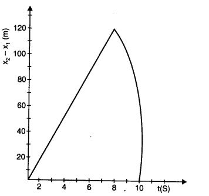
Answer: For first stone,
x (0) = 200 m, v (0) = 15 ms-1, a = -10 ms-2
x1 (t) = x (0) + v (0) t + 1/2 a t2
x1 (t) = 200 + 15t – 5t2
When the first stone hits the ground, x1 (t) = 0
– 5t2 + 15t+ 200 = 0 On simplification, t = 8 s
For second stone, x (0) = 200 m, v (0) = 30 ms-1, a = -10 ms-2
x1 (t) = 200 + 30t – 5t2
When this stone hits the ground, x1(t) = 0 .-. -5t2 + 30t + 200 = 0
Relative position of second stone w.r.t. first is given by x2 (t) – x1 (t) = 15t
Since there is a linear relationship between x2(t) – x1 (t) and t, therefore the graph is a straight line.
For maximum separation, t = 8 s So maximum separation is 120 m
After 8 second, only the second stone would be in motion. So, the graph is in accordance with the quadratic equation.
Question 3. 27. The speed-time graph of a particle moving along a fixed direction is shown in Fig. Obtain the distance traversed by the particle between
(a) t = 0 s to 10 s. (b) t = 2 s to 6 s.
What is the average speed of the particle over the intervals in (a) and (b)?
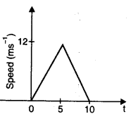
Answer:
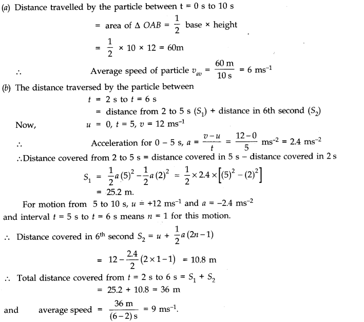
Question 3. 28. The velocity-time graph of a particle in one-dimensional motion is shown below. Which of the following formula are correct for describing the motion of the particle over the time interval from t1 to t2?
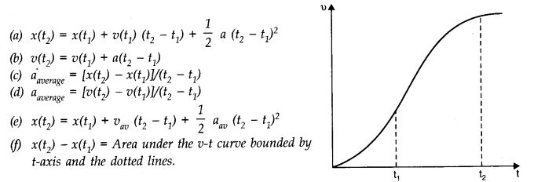
Answer: (c),(d),(f).
As it is evident from the shape of v-t graph that acceleration of the particle is not uniform between time intervals t1 and t2. (since the given v-t graph is not straight). The equations (a), (b) and (e) represent uniform acceleration.
NCERT Solutions for Class 11 Physics All Chapters
- Chapter 1 Physical World
- Chapter 2 Units and Measurements
- Chapter 3 Motion in a Straight Line
- Chapter 4 Motion in a plane
- Chapter 5 Laws of motion
- Chapter 6 Work Energy and power
- Chapter 7 System of particles and Rotational Motion
- Chapter 8 Gravitation
- Chapter 9 Mechanical Properties Of Solids
- Chapter 10 Mechanical Properties Of Fluids
- Chapter 11 Thermal Properties of matter
- Chapter 12 Thermodynamics
- Chapter 13 Kinetic Theory
- Chapter 14 Oscillations
- Chapter 15 Waves
We hope the NCERT Solutions for Class 11 Physics Chapter 3 Motion in a Straight Line help you. If you have any query regarding NCERT Solutions for Class 11 Physics Chapter 3 Motion in a Straight Line, drop a comment below and we will get back to you at the earliest.